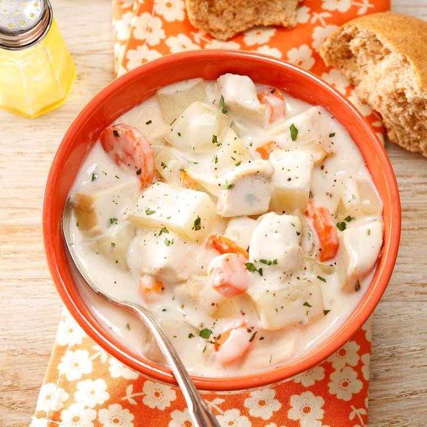

Description
Cream Cheese Chicken Soup is a type of soup prepared using cheese as a primary ingredient,
along with milk, broth and/or stock to form its basis. Various additional
ingredients are used in its preparation, and various types and styles of
cheese soup exist. It is a part of some cuisines in the world, such as
American, Colombian, Mexican, Swiss, French, and Tibetan cuisines.
Mass-produced cheese soups may be prepared with the addition of food
additives to preserve them and enhance flavor. A list of cheese soups
is included in this article.
Ingredients
- 1 small onion, chopped
- 1 tablespoon butter
- 3 cups chicken broth
- 3 medium carrots, cut into 1/4-inch slices
- 2 medium potatoes, peeled and cubed
- 2 cups cubed cooked chicken
- 2 tablespoons minced fresh parsley
- Salt and pepper to taste
- 1/4 cup all-purpose flour
- 1 cup 2% milk
- 1 package (8 ounces) cream cheese, cubed
Steps
- In a large saucepan, saute onion in butter. Add the broth,
carrots and potatoes. Bring to a boil. Reduce heat; cover
and simmer for 15 minutes or until vegetables are tender.
Add the chicken, parsley, salt and pepper; heat through.
- Combine flour and milk until smooth; add to the vegetable mixture.
Bring to a boil; cook and stir for 2 minutes or until thickened.
Reduce heat. Add cream cheese; cook and stir until melted.